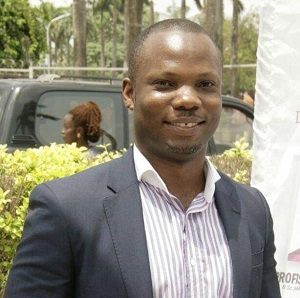

Anderson Oaikhena andersonose@yahoo.co.uk
Anderson became part of the lab as a postgraduate student in 2015. Anderson is currently a doctoral student focusing
on bacterial colonists of the phyllosphere of medicinal plants with a view to better understanding their overall contributions to the
plants as well as the ecology of natural antimicrobial resistance. As a genomic surveillance scientist in the lab, he is involved in
preparing libraries and sequencing bacterial isolates received from the Nigerian AMR surveillance network.

Ayorinde Afolayan afolayanayorinde@gmail.com
Ayorinde Afolayan (
ORCID) holds a doctorate in Pharmaceutical Microbiology (microbial genetics) and joined the lab in 2018 as a
Research Associate for the Nigerian node of the GHRU-GSAR (Global Health Research Unit for the genomic surveillance of antimicrobial
resistance) project. Currently, he is a post-doctoral scientist on the aforementioned project and he is tasked with the in silico analysis
and interpretation of sequence data derived from WHO-high priority pathogens, for the active surveillance of antimicrobial resistance in
Nigeria. He is particularly interested in microbiome studies, bacterial genomics, and antimicrobial resistance.

Bisi Akinlabi akinlabi.olabisi@yahoo.com
Bisi joined the lab in 2015 and she is now a Research Assistant and a PhD student. Her work focuses on Molecular identification
of diarrhoeagenic Escherichia coli and other faecal enteric bacterial. She is particularly interested in molecular analysis, bacterial
genetics, resistance patterns of enteric bacterial as well as; types and mechanisms of resistance.
David Kwasi ajigadave@yahoo.com
David A Kwasi is the pioneer staff member of the Molecular Microbiology lab and has been the lab manager
since March, 2015. He is a Research Fellow to Professor Iruka Okeke with the primary responsibility of coordinating effective
running of the lab. David is driving and rounding off his interdisciplinary drug discovery PhD project aimed at identifying
antiadhesins that could be used therapeutically in infantile diarrhoea and he is a co-investigator on the African Academy of
Sciences drug discovery project in the University of Ibadan, Nigeria.

El-shama QA Nwoko monu.nwokoeqa@gmail.com
El-shama is a doctoral student who joined the lab as a masters student in 2016. Her research focuses on elucidating
the pathogenesis of autoaggregation and biofilm formation of enteroaggregative
Escherichia coli (EAEC). Autoaggregation is a crucial
step in EAEC pathogenesis. Thus, El-shama is using a high through-put method to factors and mechanisms involved in EAEC autoaggregation.
El-shama is also an AMR enthusiast and an Editorial assistant with
African Journal of Laboratory Medicine.

Erkison Odih erkisonodih@gmail.com
Erkison is a PhD candidate at the University of Copenhagen, Copenhagen, Denmark studying antibiotic resistant Acinetobacter populations
in the clinical and environmental settings in Nigeria using genomics. Erkison is a bioinformatician who has been part of the group since 2017, and he is
responsible for server administration, pathogen genomics analyses and software design/implementation. His specific research interests are pathogen population
structure and AMR in Africa. As a part-time duty, Erkison is also an Editorial Assistant with the African Journal of Laboratory Medicine, which Prof Iruka edits.

Faith Popoola faithifep@yahoo.com
Faith Popoola joined the laboratory in 2018 as a Masters project student under the supervision of Prof. I.N. Okeke.
Her work was on transmission of antimicrobial resistance in Enteroaggregrative Escherichia coli isolated from stool samples of
children in Ibadan North, Oyo State. Faith is currently a research associate with the SeqAfrica genomic AMR surveillance project.
Ifeoluwa Akintayo akintayoife94@gmail.com
Ifeoluwa Akintayo joined the lab in 2018 as a Masters project student, her work was on the bacteriological
examination of household water in municipal Ibadan, Oyo state. Ife is now a research assistant working on a project “Minimal
genomics laboratory for AMR surveillance and diagnostics in provincial low-income settings” using the Oxford Nanopore whole
genome sequencing platform.
Jerry Oloche member@email.com
Jerry is a graduate of Pharmacy with a Masters degree in Pharmacology. His research focus is on discovery of antivirulence
agents and elucidation of the molecular mechanism(s) by which these agents act. He joined the laboratory in 2016 and has rounded off his
Ph.D research.
Jolaade Ajiboye jolaade.janet@yahoo.com
Miss Jolaade Ajiboye who holds a Masters Degree in Public Health (Health Promotion and Education) from the
University of Ibadan joined the laboratory in 2018. She is the program officer for the Global Health Research Unit-Genomic
Surveillance of Antimicrobial Resistance and Minimal Genomics Laboratory for AMR surveillance and diagnostic in provincial
low-income settings. Her role has been to carry out administrative duties.
Mariam Odebode mariam.a.odebode@gmail.com
Odebode Mariam Abosede is currently undergoing an MSc programme, majoring in Pharmaceutical Microbiology at the
University of Ibadan. Her research focuses on the investigation of enteropathogenic Escherichia coli among people living with
HIV attending two health institutions in Ibadan, Oyo State, Nigeria.
Niyi Bejide stephen_bejide@yahoo.com
Niyi is a doctoral candidate who joined the lab in 2017. He is keenly interested in understanding the epidemiology of
enteroaggregative Escherichia coli strains causing diarrhoea in HIV patients. His research seeks to elucidate the factors responsible for
the distribution of such pathogens, the clonal groups to which they belong as well as their antibiotic resistance profiles. Niyi is the
Biological Scientist of the Severe Typhoid in Africa (SETA-Nigeria) project tasked with running the molecular operations of the project.

Nonye Osuagwu nonyeo8@yahoo.com
Nonyelum a medical scientist joined the lab in 2017, as a member of the Global Health Research Unit
for Genomic Surveillance of Antimicrobial Resistance in Ibadan Nigeria. His work focuses on investigating the spread of
local clones of fluoroquinolone-resistant Klebsiella and Salmonella predominant in public and private healthcare facilities
across Nigeria.

Odion Ikhimiukor odionikh@gmail.com
Odion is doctoral candidate of Environmental Microbiology at the University of Ibadan, Nigeria. His doctoral research investigates the roles of heavy metal pollutants in driving antimicrobial resistance (AMR) in bacterial communities in the natural environment, thus elucidating on potential environmental hotspots of AMR. He joined the lab as a Research Associate in the SEQAfrica project in March 2020.
Olatomide Fagbohun olatomidefagbohun@gmail.com
Olatomide is an M.Sc student currently being supervised by Prof. Iruka, he joined Okeke lab in 2019 and his research focuses on the determination of mechanisms of actions of selected compounds from pathogen box chemical library.

Rotimi Dada dadarotimi@hotmail.com
Rotimi is currently a Ph.D. student. He came to the lab with a desire to combine wet lab microbiology with dry lab
(computational genomics) microbiology. His Ph.D focusses on understanding how genes are exchanged in Escherichia coli and the roles of
these genes in the fitness of subsets of this species to either cause disease or retain the role of a commensal in their hosts.
Rotimi is equally interested in better understanding how Escherichia coli species (including shigellae) become greatly diverse within
their species. In addition, Rotimi is also one of the bioinformaticians in the group, providing support for specific bioinformatic
needs of some members of the group.
Shola Fagbemi member@email.com
Fagbemi Adeshola joined the lab in 2019 as a drug discovery investigator. He's presently working towards identifying molecules that can inhibit biofilm formation of Salmonella enterica.
Sunmonu Gabriel Temitopetoppytee4real56@gmail.com
I am currently a Master's student of Pharmaceutical Microbiology at the University of Ibadan. I joined Okeke lab in 2019.
My research focuses on the genomic relatedness of antimicrobial resistant E. coli isolated from chicken meat and human clinical samples.
Timilehin Adeogun member@email.com
Timilehin is currently an Msc student studying pharmaceutical Microbiology at University of Ibadan. He joined the lab in 2019 and he is currently researching the molecular epidemiology of agglutinins in Escherichia coli from cases of diarrhea in Children (0-5 years) at the University College Hospital (UCH), Ibadan.